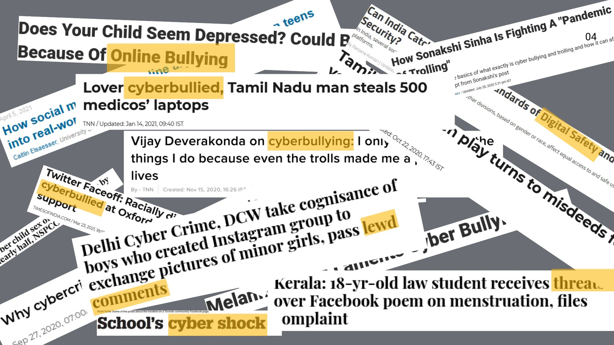
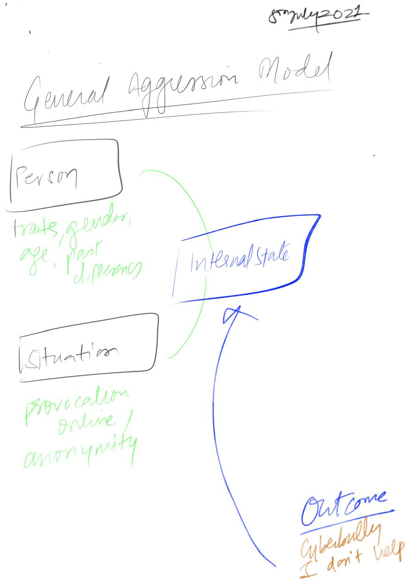
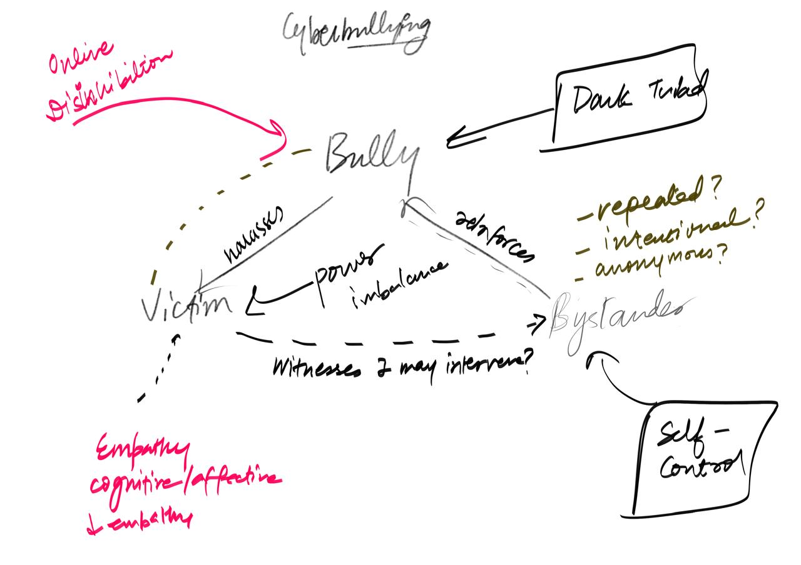
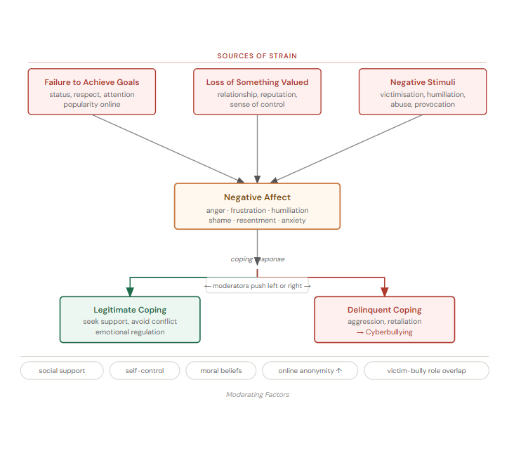
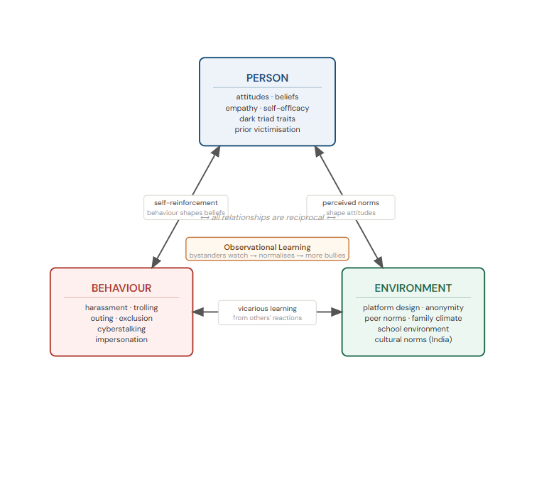
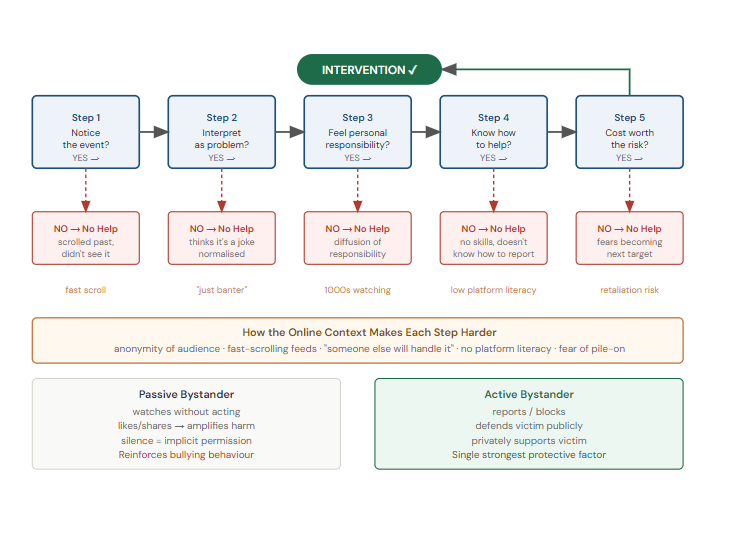
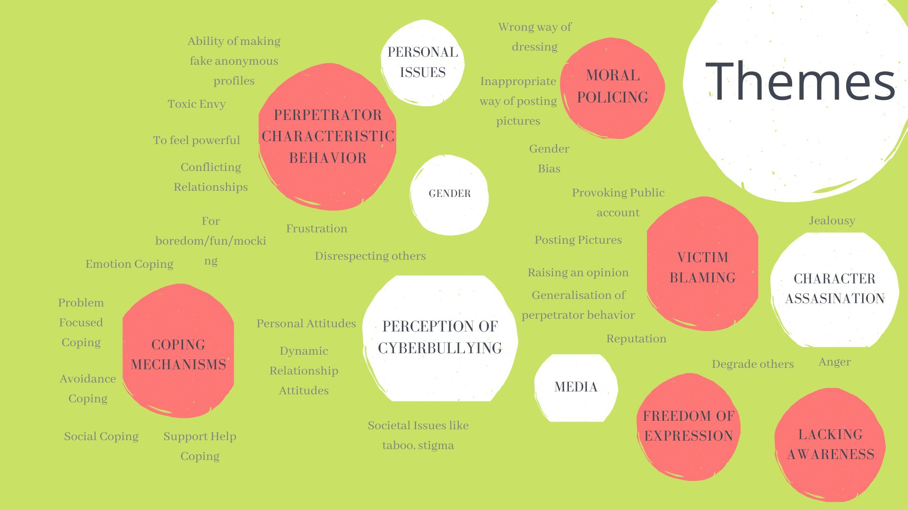
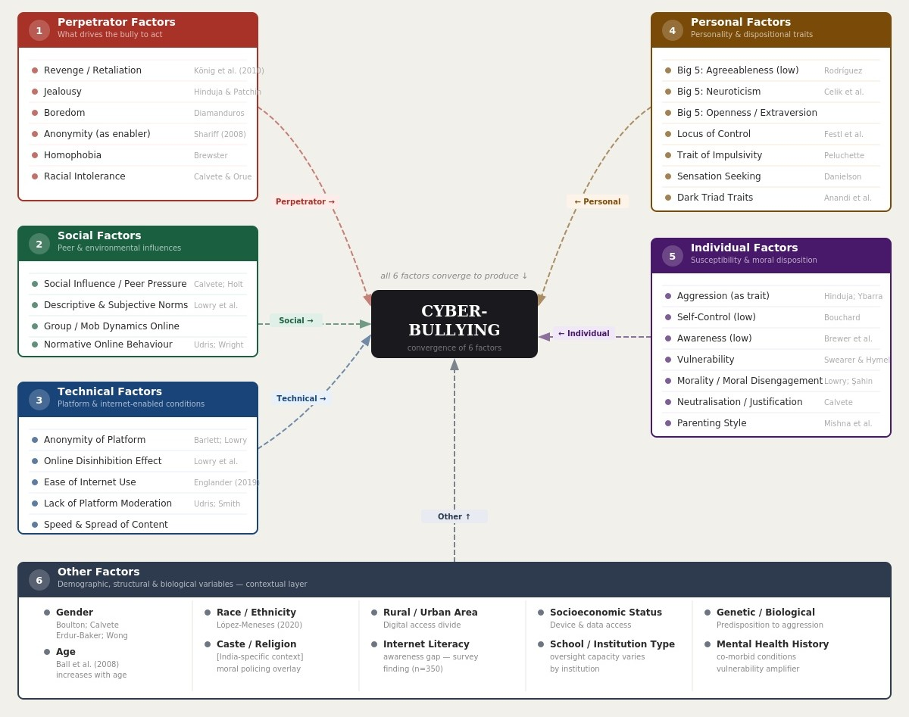

Cyber aggression in India is no longer episodic — it is systemic, amplified, archived and publicly consumable. This research maps the psychological, social and technical layers shaping digital harm.
Digital aggression today operates within infrastructures that reward visibility and outrage. Harm is persistent, searchable and scalable. Platform affordances such as anonymity, virality and algorithmic amplification transform isolated hostility into public spectacle.

Media narratives shape moral climates. Repeated framing of shame, scandal and punishment normalises digital humiliation as entertainment. Visibility becomes reinforcement.
Three interlocking models explain how dispositional traits, digital affordances and social learning converge to produce and sustain cyberbullying behaviour.

Situational inputs → internal states → behaviour. Dispositional traits (gender, age, past experiences) and situational provocations (anonymity, online context) feed an internal state that determines the outcome: cyberbullying or not helping.

Psychological distancing amplifies hostility. Dark Triad traits, anonymity and absent consequences remove the inhibitory brakes that govern offline behaviour — directing harm toward victim and bystander alike.
Together, dispositional traits and digital situational affordances converge to weaken inhibitory control, intensifying expressive aggression.

Moral policing and victim blaming operate as "negative stimuli" strain. Public shaming acts as a trigger while weak institutional support removes legitimate coping pathways — pushing toward delinquent coping (aggression, retaliation).

Observing bullying without consequence reinforces the behaviour through social learning and norm internalisation. Person, behaviour and environment interact in a reciprocal loop — online context and cultural norms (India) are active variables.

Failure in responsibility recognition and reporting literacy disrupts each intervention stage. Audience anonymity, "someone else will handle it" reasoning, and low platform literacy all block bystanders from becoming active helpers.
A mixed-method approach enabled structural mapping through quantitative modelling while capturing lived experience through qualitative depth.
Digital harm rarely appears as a single event. It compounds across time, shaping identity, self-esteem and behavioural withdrawal.

Thematic map — qualitative analysis revealed eight overlapping theme clusters, centred on victim blaming, moral policing and coping mechanisms.

The 6-Factor Model integrates perpetrator, social, technical, personal, individual and contextual layers into a systemic framework of digital harm.
Each case was selected to illustrate a distinct intersection of risk factors. Names and identifying details are anonymised; participant codes are retained as given.
Public opinion expression triggered harassment, body-shaming and family-level victim blaming. Fear, academic decline and self-censorship followed. While partial family support aided recovery, stigma suppressed early reporting. Digital visibility transformed dissent into punishment.
Gender-based harassment escalated into threats and exclusion. PTSD symptoms, anxiety and substance coping emerged. Maternal support functioned as a stabilising protective factor. Moral policing intensified identity-based vulnerability.